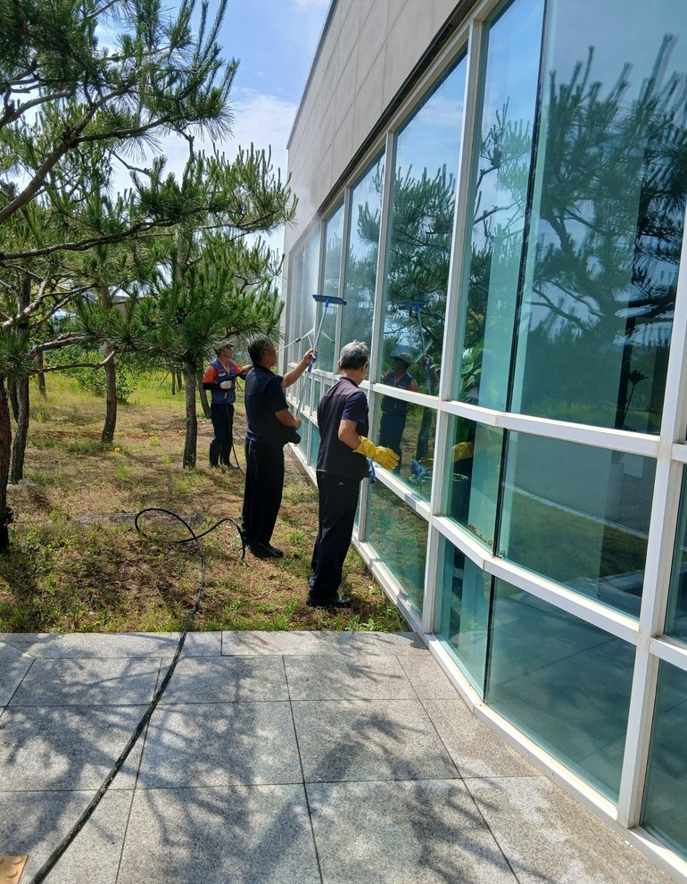
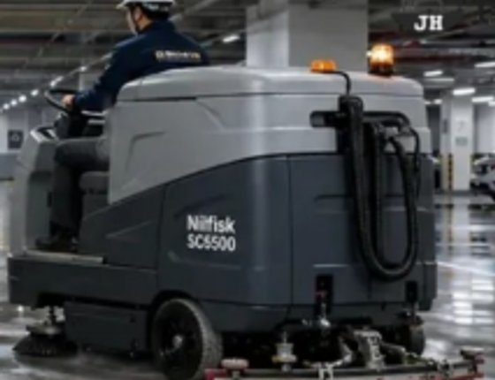
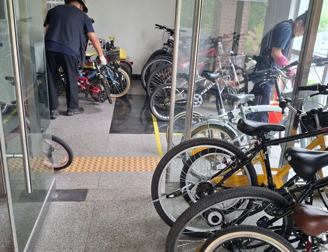

Overview
공간의 특성을 살피고,
공간의 특성을 살피고,
필요한 청결을 채웁니다
공간별 특성과 이용 상황에 맞춰 청소 범위와 작업 일정을 조율합니다. 청소 상태를 수시로 확인하고, 고객의 요청과 현장 상황을 반영해 필요한 부분을 보완합니다.
주요 대상
아파트업무시설산업시설의료시설기숙사 · 연수시설
- 구역별 청소 · 위생관리 · 폐기물 처리
- 정기 · 특별 작업 (고압 세척, 창틀, 바닥, 외곽)
- 소모품 · 장비 · 안전관리
- 정기 점검 보고
 고압 세척 특별작업
고압 세척 특별작업Clean Control공간과 현장에 맞춘
공간과 현장에 맞춘
네 가지 청결 관리
공간의 특성과 이용 상황을 살펴 쾌적한 환경을 가꿉니다.
ZONE
구역별 청소 관리
실내·외, 기숙사, 전시장 등 공간에 맞춰 담당 구역과 청소 범위를 정합니다.
SCHEDULE
현장에 맞는 작업 일정
공간 이용 시간과 현장 여건을 고려해 청소 일정과 작업 순서를 조율합니다.
CHECK
청소 상태 확인
화장실·공용공간 등 주요 구역의 청소 상태를 살피고 필요한 부분을 보완합니다.
SPECIAL
필요에 따른 추가 청소
계절 변화와 오염 상태에 따라 추가 청소가 필요한 부분을 확인하고 작업 범위를 협의합니다.
On site
현장에서 일하는 모습
고압 세척(실내 · 외 외벽과 바닥)부터 공용공간 정리, 장비를 활용한 바닥 청소까지.


Win-win현장 중심의 실행과
현장 중심의 실행과
상생협력으로 만드는 만족
발주처, 현장관리자, 미화근무자가 같은 기준으로 움직이도록 여섯 가지 운영방안을 실행합니다.
01
소통 강화
발주처 및 현장과 정기적인 소통체계를 운영합니다.
02
협업체계 구축
현장관리자와 미화근무자 간 협력을 강화합니다.
03
현장 점검
정기 점검을 통해 운영 품질을 관리합니다.
04
교육 실시
직무 · 안전교육으로 서비스 역량을 강화합니다.
05
신속한 민원 대응
즉시 보고와 신속한 조치체계를 운영합니다.
06
지속적 개선
운영성과를 분석하고 개선해 상생을 실현합니다.
고객에게 공유되는 기록
미화 일일근무 편성표구역별 미화 상태 사진 점검월간 점검 보고서
More services
함께 운영하면 더 효율적입니다

Contact현장의 고민,
현장의 고민,
함께 살펴보겠습니다.
필요한 업무와 현장 상황을 듣고, 여건에 맞는 서비스와 운영 방향을 제안합니다.